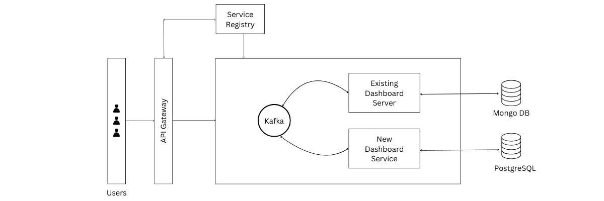

Business Requirements Document for Dashboard 2.0
1. Introduction
This Business Requirements Document (BRD) details the framework necessary to evolve the Dashboard module from its
current monolithic structure into a microarchitecture. This transformation will directly address several key
business needs:
1.1 Purpose
Transform the Dashboard module into a microservice: The primary purpose is to extract the Dashboard module
from
the existing monolithic architecture and establish it as an independent, self-contained microservice. This
aims
to improve the Dashboard's modularity, scalability, and maintainability.
1.2 Objectives:
Enable live data display: Allow the Dashboard to receive and visualize data in real-time, ensuring users
always
have access to the most up-to-date information.
Implement user configuration saving: Provide users with the ability to customize the layout and settings of
their Dashboard and save these preferences for future use.
Support custom queries: Empower users to execute custom queries against the underlying data, allowing them
to
extract specific insights tailored to their needs.
Maximize uptime: Ensure the Dashboard remains operational with near-perfect availability (close to 100%
uptime),
minimizing downtime and service disruptions.
Integrate AI capabilities: Introduce AI-powered features to the Dashboard, enabling automated insights
generation and potentially conversational interactions with users (chat capabilities).
1.3 Scope:
1.3.1 In Scope:
1.3.1.1. User Interface:
Design Consistency: Factory based component design for visual consistency and scalaility all across the
dashboard.
Intuitive Navigation: Design clear menus and workflows for ease of use.
1.3.1.2. Server:
Microservices Servers: Develop a NodeJS-based backend API layer consisting of the necessary
microservices (Core Data, Analytics, Legacy Integration, etc.). Ensure secure communication with the
frontend and
manage database interactions.
The Service Discovery mechanism helps us know where each instance is located. In this way, a Service
Discovery component acts as a registry in which the addresses of all instances are tracked.
1.3.1.3. Connection Broker/Server:
Kafka Integration: Implementation of Kafka pipeline for data orchestration
- Kafka Topics: Design Kafka topics to organise data flow (e.g., separate topics for live updates,
historical
data transfers).
- Producers: Develop Kafka producers to publish data from existing systems into the pipeline.
- Consumers: Create Kafka consumers within the new dashboard's backend to receive updates and feed
them into
the database.
1.3.1.4. Database:
Schema Design: Optimise database structure for storing historical and time-series data for
efficient queries.
Query Optimisation: Develop queries for both static dashboard elements and real-time updates.
TimeScaleDB Integration: Leverage TimeScaleDB's features for time-series data analysis and
efficient
real-time updates.
1.3.1.5. Data Migration:
Data Analysis: Assess what data needs to be migrated and in what format it currently exists.
ETL Processes: Create extract, transform, and load (ETL) combining data from multiple sources
into a large, central repository called a data warehouse processes to move data to the new,
optimised database structure.
Data Validation: Ensure data quality and consistency after migration
1.3.2 Out of Scope:
Immediate Replacement of the Legacy System: The project aims for a phased migration. The legacy dashboard
will operate alongside the new dashboard during the transition.
Complex AI Model Development: Assume the development of any sophisticated AI models is handled by a
separate project or dedicated team. However, this project lays the groundwork for integrating and
visualizing the outputs of these models.
2. Functional Requirements:
2.1 Microservices:
The dashboard should be the initial phase of compartmentalization of backend
2.2 Data:
The Dashboard should support various data sources, including internal applications and external APIs. Data
should
be displayed in a clear and concise manner. The Dashboard should provide real-time
updates and notifications.
2.3 Data Visualization:
The Dashboard should provide various data visualization options, such as charts, graphs, and dashboards. The
visualizations should be interactive and allow users to drill down into specific data
points.
2.4 Save Settings:
The Dashboard should have the capability to save the settings of the user of how the person arranged the
dashboard
2.5 Custom Query:
The Dashboard should be able to put showcase result of custom queries
3. Non-Functional Requirements
3.1 Performance
The Dashboard should be highly responsive and performant. The Dashboard should be able to handle high
volumes of
concurrent users and data requests.
3.2 Scalability
The Dashboard should be scalable to accommodate growing user loads and data volumes. The Dashboard should be
able
to be easily scaled up or down as needed.
3.3 Reliability
The Dashboard should be intuitive but mainly reliable. The Dashboard should be available and operational
99.9% of the
time.
3.4 Maintainability
The Dashboard should be easy to maintain and update. The Dashboard should have a clear and concise codebase.
The
Dashboard should have well-documented APIs and processes.
4. Technical Considerations
4.1 System Architecture

4.2 Technology Stack
Frontend: ReactJS - Continues handling the user interface.
Backend:
- Microservices: NodeJS - We can utilize our existing Node Js functions and code
- Database: PostgreSQL - The core database for structured data.
- Time-series database: TimescaleDB - Efficiently stores and analyzes time-series data. Would be of
great
help for realtime data
- Message broker: Kafka - Enables asynchronous communication and event streaming between
microservices.
- API Gateway interaction: Reduces complexity and speeds up app releases, client type
Streamline and simplify request processing and policy enforcement by centralizing the point of
control
and offloading non-functional requirements to the infrastructure layer, Simplify troubleshooting
with
granular real-time and historical metrics and dashboards
Machine Learning: Fine-tuned LLM with our data - analytics-focused LLM model for data analysis tasks within
the
microservices. My suggestion for LLM: GPT-NeoX-20B because of its stats and maths data
it has been trained on
4.3 Monitoring and Instrumentation
The Dashboard should be monitored and instrumented to ensure a high performance and scalability. The
monitoring
tools should provide real-time insights into Dashboard performance.
Conclusion
The Dashboard should be a critical component of the application. By implementing the requirements outlined in
this document, we can improve Dashboard performance, scalability, and maintainability.